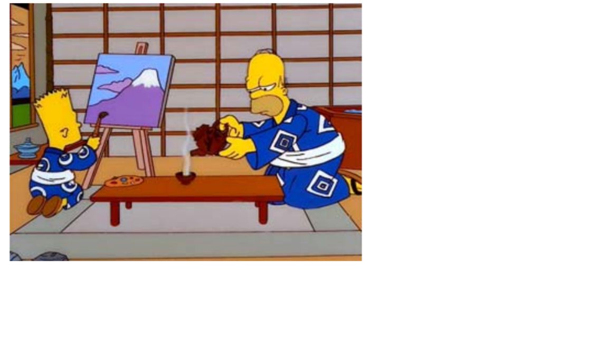
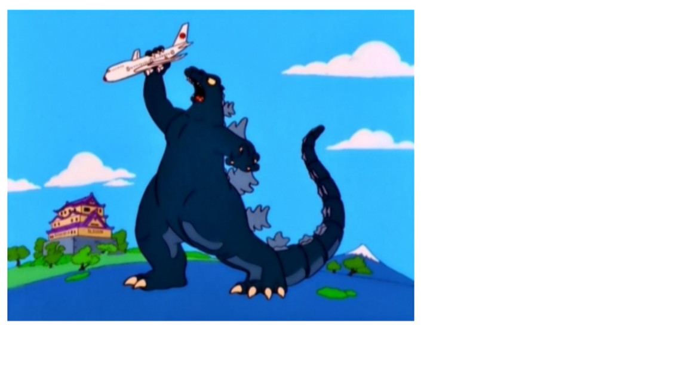

Para Austin Brady
Para citar este artículo puede utilizar el siguiente formato: Cid Lucas, F.: “La apreciación de clichés culturales japoneses a través de The Simpsons: a propósito de 30 minutes over Tokyo" en Observatorio de la Economía y la Sociedad del Japón, mayo 2010. Texto completo en http://www.eumed.net/rev/japon/
Que la famosísima serie de dibujos animados The Simpsons, creada por el dibujante y productor Matt Groening (1954- ) en 1987, ha criticado -siempre desde una Atlántida ilocalizable como es Springfield- a la sociedad estadounidense es un hecho constatado. Y este hecho no ha pasado desapercibido para muchos comentaristas, quienes la han tachado de izquierdista o, incluso, de ir en contra del espíritu de su país. El propio Al Jean, productor y escritor de esta serie, ha admitido en público a este
respecto que: “Nosotros [la serie] somos de inclinación liberal”. Como el lector entenderá, este liberalismo les ha llevado a hacer blanco en el sistema político, financiero o sanitario de los EE.UU., consiguiendo la carcajada de unos y el ceño fruncido de otros, pero jamás la indiferencia. Más fino tendríamos que hilar al estudiar la serie de capítulos, famosos por presentar la coletilla (permítanme que use ahora las palabras en castellano) Los Simpsons viajan a... (más el nombre del país de destino), en los que la familia (o una parte de ella) abandona suelo americano para asentarse, por unos motivos o por otros, en otro país. Pues bien, si visualizásemos la lista completa de capítulos en los que los protagonistas se desplazan hasta lugares como Australia, India, Canadá, Italia, Francia, Reino Unido, Cuba, Brasil, etc. veremos que esa crítica, directa y descarada al tratarse de los EE.UU., su vuelve una sutil diatriba realizada siempre desde los clichés culturales más asequibles para el gran público.
No es mi intención, ni tampoco el objeto principal del ensayo, afirmar que la forma en la que se va desarrollando la trama del capítulo es, como su contenido,
El capítulo que propongo analizar en este breve artículo es el titulado 30 minutes over Tokyo, nombre tomado de la famosa película de Mervyn LeRoy Thirty Seconds Over Tokyo (1944). El capítulo número 23 de la décima temporada, último de ésta, es como pocos una sabia exposición esquemática de la sociedad nipona y, aún más, de la actitud de una parte de Occidente ante ella, representada aquí por la familia springfieldiana. 30 minutes over Tokyo fue estrenado por la FOX el 16 de mayo de 1999 y, hasta la fecha, varios han sido ya los artículos de investigación que ha merecido y, aún más, varias las universidades en donde ha sido objeto de estudio en asignaturas de licenciaturas como Antropología o Sociología1
allá de una lección de estereotipos, los guionistas buscan involucrar la mentalidad occidental con Japón (si bien de manera sucinta), presentando el pasmo ante la gran urbe, los precios exorbitados o el peculiar sentido del humor nipón. Entrando ya en los motivos culturales japoneses que aparecen en este capítulo, tenía que ser Lisa, la más sensible de la familia, la que descubra que las instrucciones de seguridad del avión están redactadas siguiendo los patrones del haiku, poema japonés por antonomasia de tan sólo 17 sílabas, en cuya composición destacaron autores como Matsuo Bashoo o Shiki Matsuoka. El que nos ocupa, en concreto, dice así4
Abróchense los cinturones,
Los cojines flotan suavemente,
Auriculares cinco dólares.
Una vez toman tierra -y se hace alusión al cambio horario-, Lisa, siendo consecuente con la idiosincrasia de su personaje, es la que más entusiasmo muestra por la cultura nipona, maravillándose con la vista desde la ventana de su hotel de los jardines imperiales, el templo Meijí o la fábrica de Hello Kyttie! Pero he aquí que su intención de explorar el país y su cultura choca frontalmente con la personalidad, un tanto chovinista y poco entusiasta, de su padre que, para pasmo del espectador (sobre todo si éste es admirador de la cultura del Imperio del Sol Naciente), decide por todos y marchan a comer a un restaurante típico americano5 (previamente recomendado a Homer por un retrete parlanchín6 ), el cual lleva el rimbombante nombre de Americatown (Americalandia en España). Antes de dejar el hotel, es Marge la que comenta a su familia que le gustaría saber cómo preparan las hamburguesas en Japón,
y siendo él el espectador, disfrute con el sufrimiento de los nuevos concursantes, canadienses, para mayor inri). A bordo del avión, y en la recta final del episodio, Bart declara, volviendo a su auténtica psicología, que echará de menos el Kentucky Fried Chicken, cadena adalid del americanismo, de Tokyo y su océano sin ballenas. Es entonces cuando el avión de Air Japan es atacado por Godzilla, recreando la estética sesentera de las películas del monstruo japonés por antonomasia. Finalmente, el avión se aleja rumbo a Springfield, mientras se ve a Godzilla, junto a Mothra, Gamera y Rodan, compañeros en sus películas, en actitud desafiante.
No exagero si afirmo que otras muchas apreciaciones culturales se quedan en el tintero, unas más relevantes que otras. Sí quisiera resaltar, sin embargo, el detalle de las cuatro banderas japonesas ondeando en la fachada del hotel en el que se alojan los Simpsons (de nombre Royal Tokyo), en lugar de haber sólo una junto a las de otros países, como es lo acostumbrado; o el hecho de que la respuesta en el concurso a una pregunta sobre Japón fuese también Japón. Los guionistas no están haciendo aquí sino presentándonos el ya aludido por otros autores egocentrismo japonés10, o, dicho de forma más suave: pensamiento de “núcleo duro”, como ha dicho el escritor Fernando Sánchez Dragó. Un ingrediente más de la idiosincrasia nipona, rico en matices, que en Occidente se ha visto en ocasiones -equivocadamente en mi opinión- como un sentimiento de superioridad ante el resto de las naciones. Concluyo añadiendo que no cabe duda de que sea por unos motivos o por otros, Japón conforma en sí mismo un microuniverso al que es difícil acceder y que es difícil comprender o interpretar si no se tienen los oportunos manuales de instrucciones. Quizá como en pocas series o películas, en el descrito capítulo de The Simpsons esto queda patente desde el inicio del mismo. En tan sólo unos minutos, no sin altas dosis de cinismo y comicidad, tras la exageración y la mueca, sus creadores han logrado
mostrarnos algo del verdadero rostro del siempre hermoso y milenario Imperio del Sol naciente.
1 Como, por ejemplo, en la University of California Berkeley, donde el profesor Thomas B. Gold se ha ocupado del episodio en algunas sus clases.
Aunque, evidentemente, la traducción al español no respeta la métrica propia del haiku, la original, en inglés, si lo hace: Fasten seatbelts tight,/ Your seat cushions float gently,/Headsets five dollars. 5 No sin que antes Lisa plantee la idea de ir a un restaurante típico japonés. En la traducción al español se pierde un pequeño matiz, y es que la pequeña Simpson quiere visitar una nuddles hause, o restaurante especializado en fideos (ramen, en japonés), comida por excelencia de los jóvenes japoneses por lo económico de sus precios y por sus infinitas variedades. 6 El lance de Homer con el retrete hablador nos deja otra lección de cultura japonesa, ya que Homer se maravilla con los juegos de chorros de agua que éste lanza, los denominados mizu-gei, que fueron muy del gusto de los japoneses durante las primeras décadas del siglo XX. El gran cineasta Kenji Mizoguchi hizo protagonista de una de sus películas, Taki no Shiraito (1933), a una intérprete de este espectáculo.
7 El de Homer, en concreto, es el blasón perteneciente a una de las familias de actores Kabuki más prestigiosas de Japón: los Ichikawa.
8 Lo que a día de hoy serían unos 11.100 dólares. 9 Nótese que cuando vemos la fachada de la Embajada de los EE.UU. en Japón, dos jovencitas pasean cogidas de la mano, práctica habitual allí en señal de amistad y poco corriente para los estadounidenses.
10 Véase para este asunto los artículos de SUGAWARA, Kensuke, “An Attempt to Construct the Self- Consciousness Scale for Japanese”, Japanese Journal of Psichology, no55, 1984, pp.184-188; y FERNÁNDEZ COBO, Carlos Vicente, “Dificultades culturales de los alumnos japoneses”, en http://cvc.cervantes.es/ensenanza/biblioteca_ele/asele/pdf/09/09_0186.pdf
ALBERTI, John (ed.) (2003), Leaving Springfield: 'The Simpsons' and the Possibility of Oppositional Culture, Detroit, Wayne University Press. DOYLE, Jan (1999), “Beyond a Joke: Teaching Satire Using The Simpsons”, en http://www.softweb.vic.edu.au/lem/esl/pdfs/doyle GRAY, Jonathan (2006), Watching with The Simpsons: Television, Parody, and Intertextuality, New York, Routledge. MARTÍNEZ SIERRA, Juan José (2004), Estudio descriptivo y discursivo de la traducción del humor en textos audiovisuales. El caso de Los Simpson (tesis doctoral sin publicar), en http://www.tdx.cesca.es/TESIS_UJI/AVAILABLE/TDX-1115104- 095509//martinez.pdf OTT, Brian L., “¿I'm Bart Simpson, who the hell are you? A Study in Postmodern Identity (Re)Construction”, Journal of Popular Culture, vol. 37, no 1, 2003, pp.56-82.
Ilustración 1: Los Simpsons víctimas de un ataque epiléptico producido al ver dibujos japoneses (anime).
Ilustración 2: Bart y Homer en la cárcel de Tokyo. Nótese que llevan las sandalias (getta) dentro del hogar, algo que contradice las normas de etiqueta japonesa.
Ilustración 3: Godzilla atacando el avión que llevará a los Simpson de vuelta a casa.